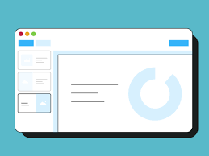

Build an Effective Portfolio for Your Career
In today's digital age, a portfolio is not only a collection of your work, but also a reflection of your identity and capabilities as a professional. With competition getting tougher in the job market, having a good and proper portfolio is key to making yourself stand out among the crowd. Let's explore the detailed steps to building an impressive portfolio
Identify Your Goals
Before you start collecting your works, first determine the purpose of your portfolio. Do you want to catch the attention of a specific company, showcase specific skills, or attract new clients? Understanding your goals will help you choose appropriate works and design your portfolio in an effective way.
Choose Your Best Work
Choose works or project outcomes that stand out and are relevant to your objective. Choose a variety that represents your skills across the board, from completed projects to those in progress. Be sure to include works that demonstrate your expertise in multiple contexts and platforms.
Organize with Order
Structure your portfolio in a way that is clear and easy to follow. Start with a summary of yourself, including your educational background, work experience and career goals. Then, organize your works in relevant categories, such as graphic design, writing, or web development. This will help readers to easily navigate your portfolio.
Provide Deep Context
Include an in-depth description for each piece of work you include in your portfolio. Explain the purpose of the project, its concept, and your role and responsibilities in carrying it out. Provide insight into the challenges you faced and how you overcame them, as well as the end result you achieved.
Pay attention to Design and Presentation
Your portfolio design should reflect your style and professionalism as an applicant. Choose a layout that is clean, consistent, and easy to navigate. Use images, colors, and fonts judiciously to enhance the visualization of your work without distracting attention from the content of your portfolio.
Include Awards
If you have any, include testimonials or awards that support your work. Testimonials from previous clients or colleagues can provide additional validation of your abilities and professionalism. Awards or recognition of your work can also enhance your credibility as a professional.
Update Regularly
Remember to regularly update your portfolio with your latest works and recent achievements. This will ensure that your portfolio remains relevant and reflects your development and progress as a professional. Also include a link or contact information that makes it easy for people to contact you if they are interested in your work.